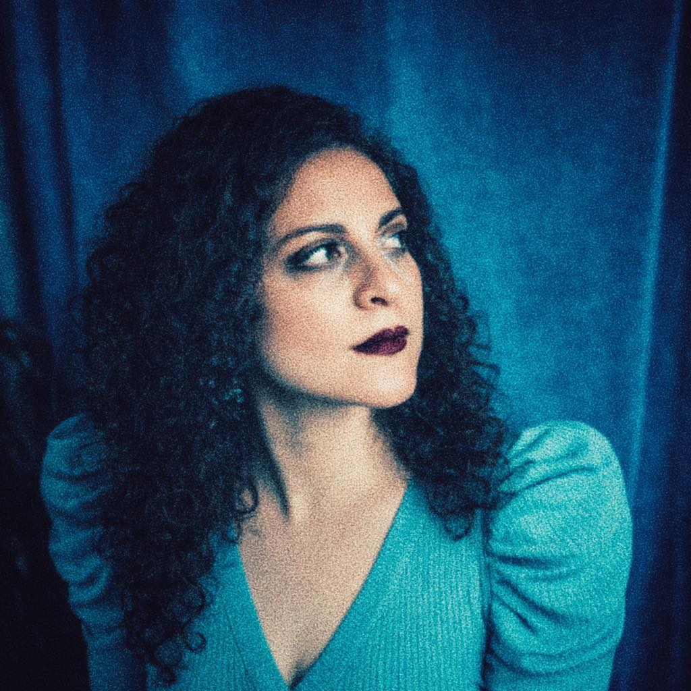
Make Art Make Money
Turn your creative practice into a successful business.
Join a small, intentional community of artists and creative entrepreneurs building sustainable businesses.
✨ Sign Me Up ✨
Dates
May 30 – June 20
10am – 12pm
Location
Online
Hosted by Santa Fe Community College
Investment
$99
+ $25 materials fee
Illustration by Aaron Shyr (madkidgenius)
The Program
A supportive space to grow.
Make Art Make Money is a 4-week workshop to help you clarify your values, build a supportive network, and grow a successful creative business that feels true to your work.

1
A small, intentional group
Limited to 10 participants, so the space can stay focused, supportive, and genuinely collaborative.
We establish shared community agreements and clear expectations around care, respect, and participation.
2
An exploratory & practical curriculum
Each session blends creative prompts, reflection, and storytelling with concrete tools to help you turn your ideas into action.
3
Committed mentorship & support
This course is designed and taught by working artists and creative professionals who are deeply invested in building New Mexico’s creative business support systems and helping you succeed.
4
Support from a larger creative ecosystem
We designed this workshop to connect creatives to the tools, networks, and opportunities needed to grow sustainably.
You’ll get to attend NM Creative Con 2026 as a special guest, and learn from other creative entrepreneurs, mentors, and alumni who understand what you're going through.
You’ll be supported, challenged, and have your vision nurtured by a community of like-minded creatives.
Why This Exists
Artists and creatives deserve better business support.
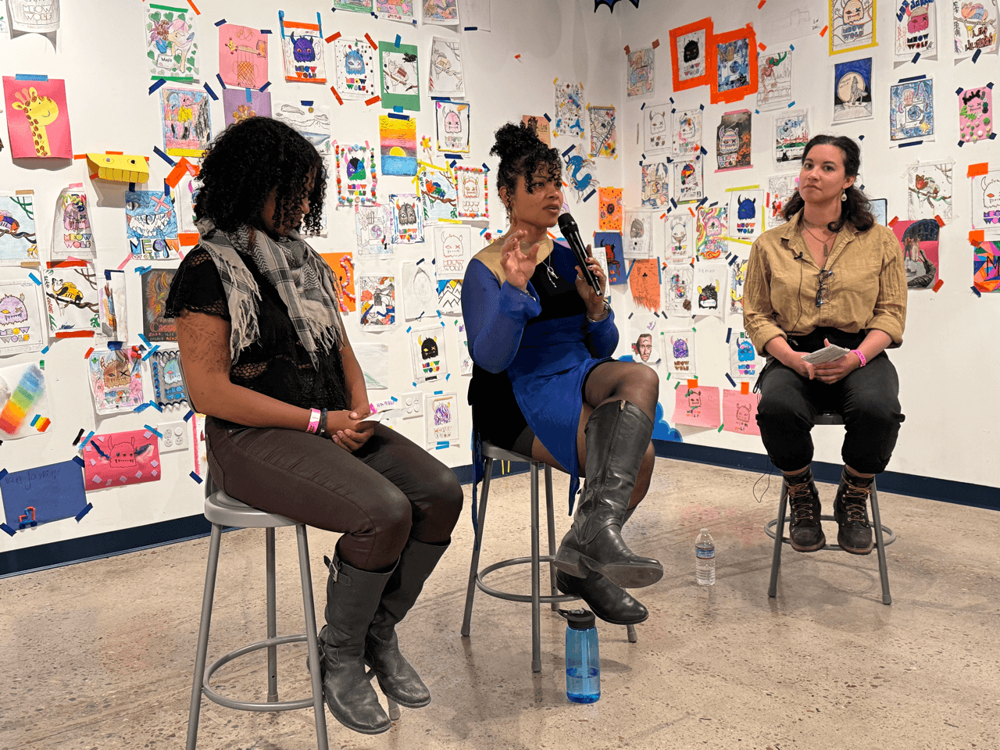
Photo by Sabri Sansoy (@sabrisansoy)
Most business programs aren’t made for creatives.
You’re expected to figure out messaging, funding, marketing and sustainability - in ways that often don’t feel aligned with your work.
Make Art Make Money is different.
We start with your creative practice, and dig into the unique gifts, strengths, and values that inspire you as an artist or maker. This becomes the foundation around which we craft your vision, goals and business strategy.
We give you the tools, resources, and support, and confidence to build a successful creative business.
Who This Is For
Artists and creatives ready to bloom 🌱.
We’re bringing together ambitious artists, makers, and creative entrepreneurs who want to take their vision to the next level, build something real, and be part of a supportive community.
Make Art Make Money Alumni
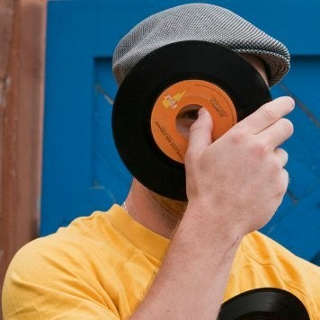
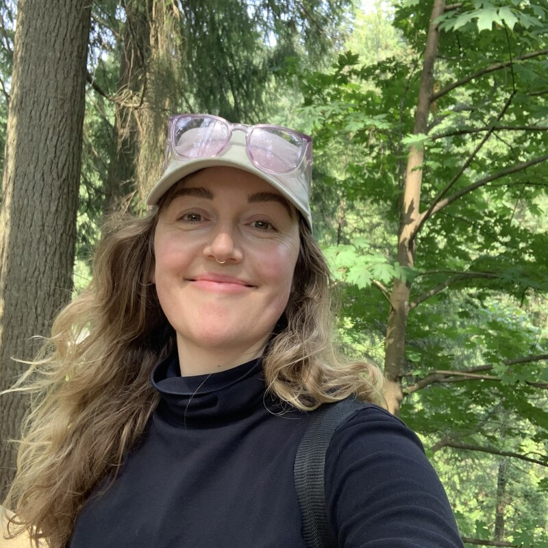
Our Alumni include:
- Artists building a career from their practice
- Makers and freelancers looking to grow
- Creatives applying for grants or funding
- Community organizers and activists
We especially welcome:
- Women-led, immigrant-led, BIPOC-led, and LGBTQIA+ creative businesses
- Artists and entrepreneurs working with rural or under-resourced communities
- Healthcare and wellness practitioners, and purpose-driven businesses
If you’ve been figuring this out on your own, this is for you.
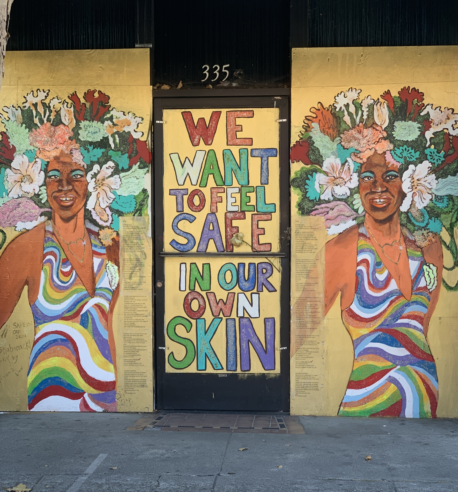
Mural by Shannon Virtue (@shabanackle)
What You’ll Walk Away With
Clear, actionable plan.
We'll help you refine the vision for your creative practice, and set clear goals to drive your business.
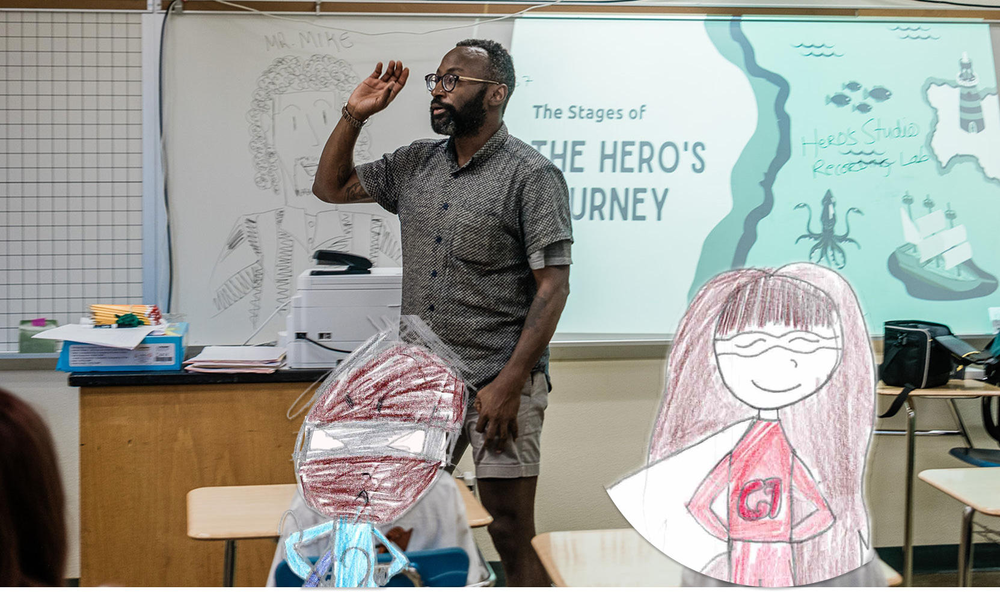
Photo by Candice Johnson (@journeyfreephotography)
You'll be guided through creative, reflective prompts, hands-on exercises to help you unlock:
1
Clarity on your work & vision
A deeper understanding of your strengths, values, and the role your work plays in your community.
2
Language to talk about what you do
The ability to clearly communicate the impact of your work, whether you’re speaking to collaborators, funders, or fans.
3
A way to think about money that actually fits your practice
Tools for understanding revenue, costs, audiences, and business models that make sense for your work and values.
4
Insights to help you better serve your fans
Business is built on relationships, and it's important to be intentional about how you connect with your community, customers, and supporters.
5
Clear boundaries & values to protect your soul
Real talk. You're going to need a strong moral compass to survive running a business under Late Stage Capitalism 🔥💩.
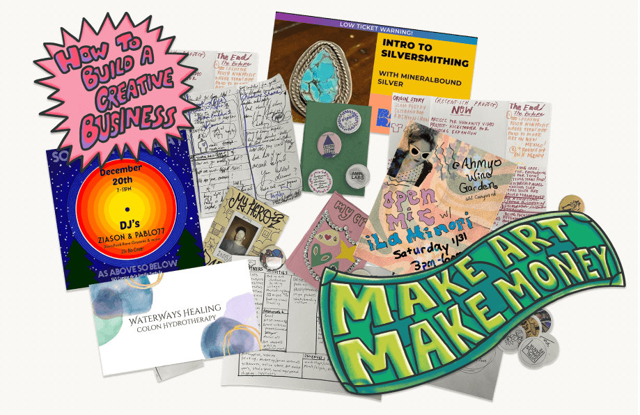
Exercises, business models, zines created by alumni
Alumni Spotlight 💚
Meet Kayla Ortiz.
Kayla founded Mineralbound Silver to offer beginner-friendly silversmithing workshops and help women and underrepresented artisans build confidence in their craft.
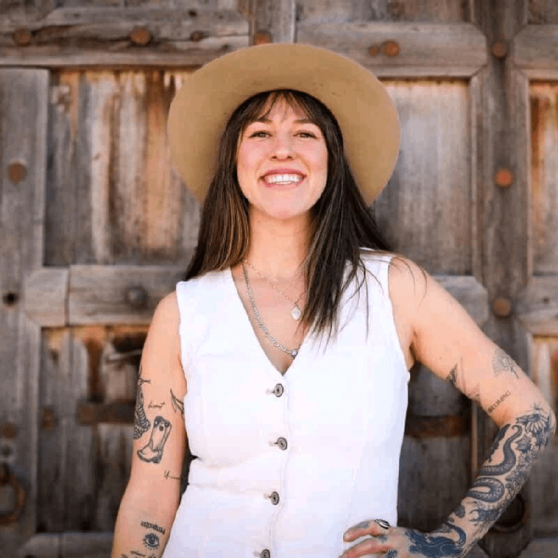
This community helped me reconnect with the foundation of my business and strengthen it in a more intentional way.
And I was able to secure a $25,000 grant from the New Mexico Creative Industries Division through the feedback and guidance I received.
This class is an asset regardless of what stage your business is in.
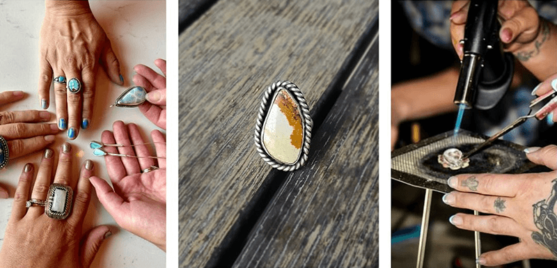
Your Instructors
Working artists committed to supporting creatives.
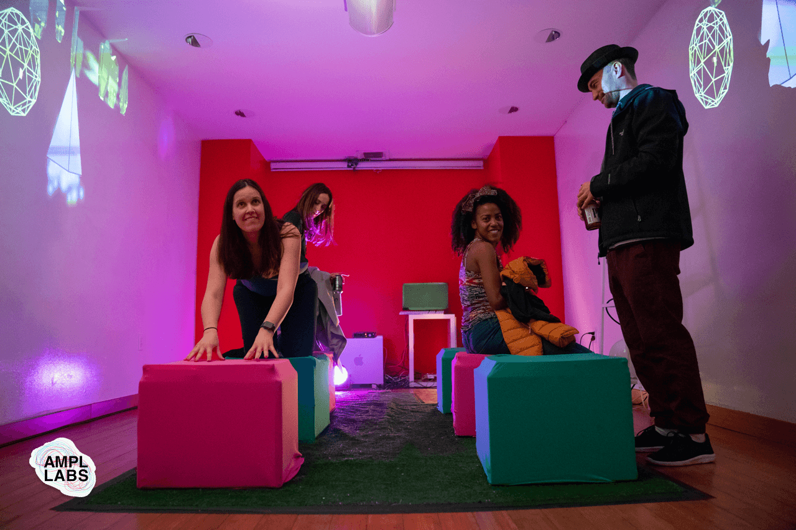
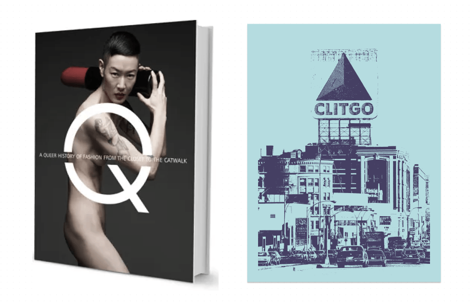
Mayowa Tomori
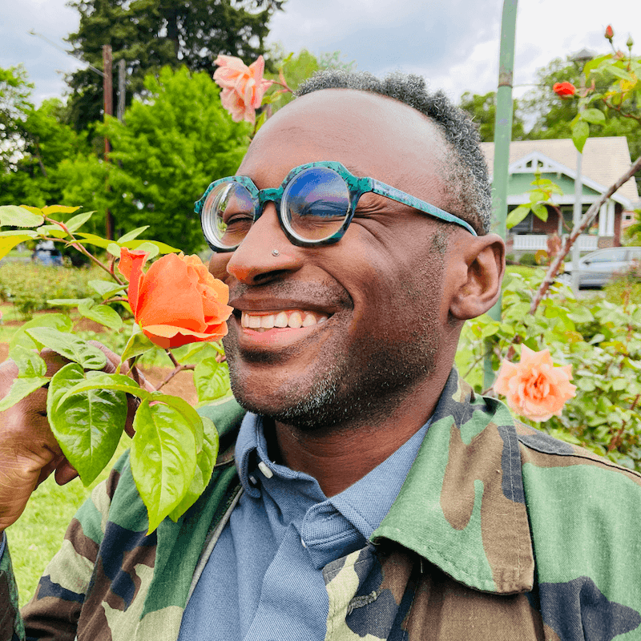
Program Designer
Artist, producer, and co-founder of AMPL Labs, a multidisciplinary creative studio focused on public art, educational programming, and interactive installations.
Mayowa is a seasoned creative, artist mentor and arts advocate who works with artists and cultural institutions all over the world. His work has been supported by $250,000 in grants and fellowships from Mozilla Foundation, Center for Cultural Innovation, and Santa Fe Arts and Culture.
Photo by Duana Fullwiley
Lauren Pellerano Gomez
Guest Lecturer
Artist, author, fashion influencer, and marketing and communications expert with over 10 years of experience supporting startups and creative businesses.
Through LPG Consulting (Santa Fe), they help underserved entrepreneurs find product-market fit, build brand positioning, and scale sustainably.
They've worked with folks from Google to Boston Public Schools, Lauren’s local clients include Vital Spaces, Francisco Gella Danceworks, SOTE, and Annie Hackett Design Studio.
Make Art Make Money
Join Us
Get the support you need
to help your creative practice bloom 🌷.